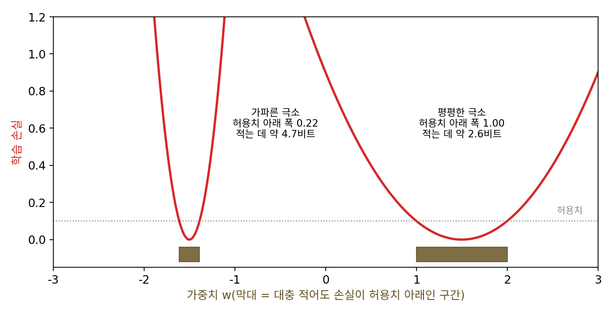
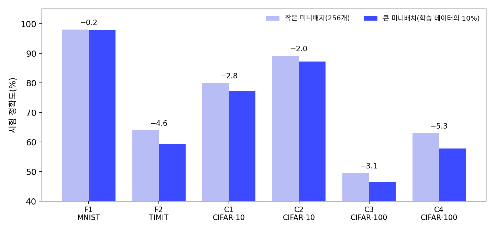
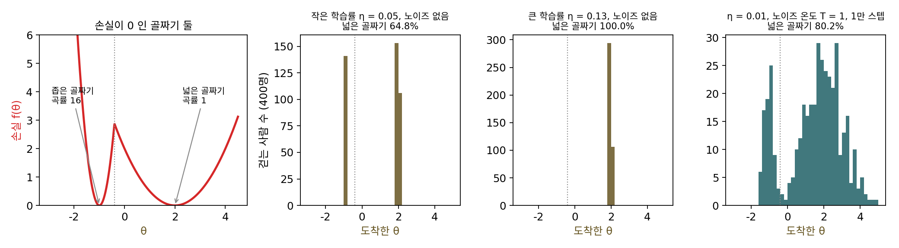
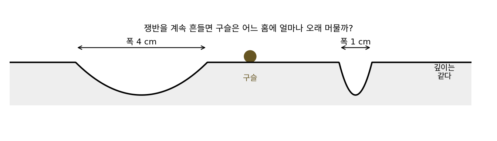
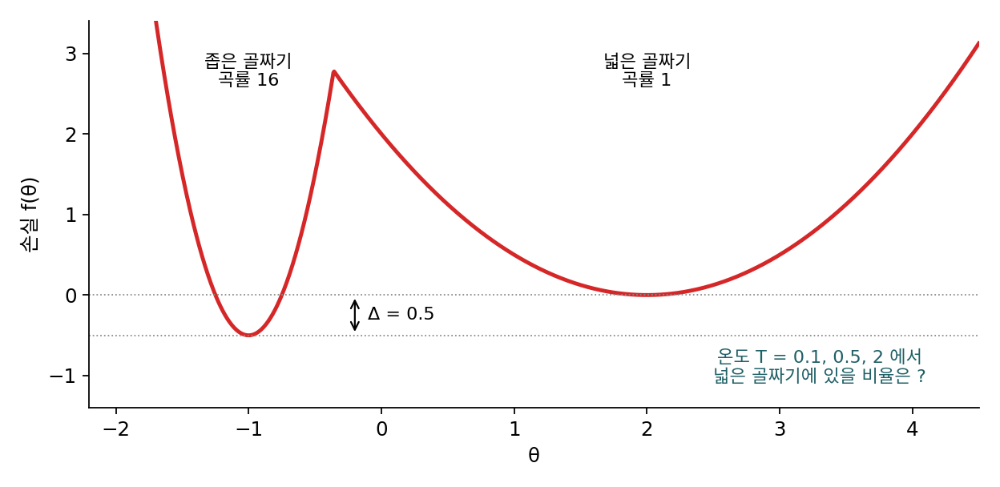
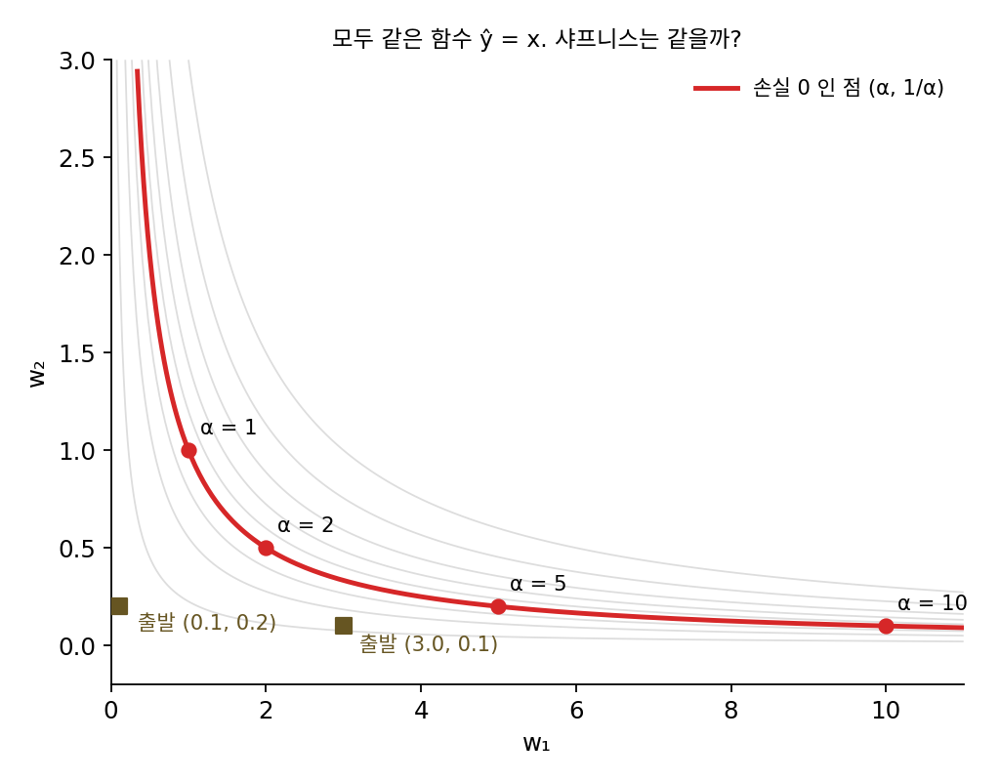

평평한 극소: 미니배치 노이즈가 고르는 골짜기
지금까지 본 해는 모두 손실이 가장 낮은 해들이 끊김 없이 이어진 집합 가운데 한 점이었다. 신경망의 손실 지형에는 이렇게 이어진 집합 말고도, 서로 떨어진 골짜기가 여럿 있다. 손실이 똑같이 0이어도 어떤 골짜기는 좁고 가파르고, 어떤 골짜기는 넓고 완만하다. 골짜기가 얼마나 가파른지는 바닥에서 잰 곡률, 곧 헤시안(2차 편미분을 모은 행렬)의 가장 큰 고윳값으로 재며, 이 가장 큰 고윳값을 샤프니스라 부른다. 미니배치 크기를 키웠더니 학습 손실은 똑같이 내려가는데 시험 성능이 나빠졌다는 보고가 있다. 확률적 경사하강의 노이즈는 어느 골짜기로 데려가고, 넓은 골짜기는 정말 더 좋은 해일까?
역사: 「평평한 극소」와 큰 미니배치의 일반화 격차
1994년 NIPS에서 제프 호흐라이터(Sepp Hochreiter)와 위르겐 슈미트후버(Jürgen Schmidhuber)는 「평평한 극소를 찾아 신경망을 단순하게(Simplifying neural nets by discovering flat minima)」를 발표했다. 두 사람은 이 글을 1997년 『신경 계산(Neural Computation)』에 「평평한 극소(Flat Minima)」라는 제목으로 다시 실었다. 그들이 말한 평평한 극소는 오차가 거의 같은 값으로 유지되는 넓게 이어진 가중치 영역이다. 근거는 최소 기술 길이(minimum description length)였다. 가파른 극소에 있는 가중치는 아주 정밀하게 적어야 오차가 커지지 않지만, 평평한 극소에 있는 가중치는 대충 적어도 된다. 적는 데 드는 비트가 적은 신경망이 더 단순한 신경망이고, 단순한 신경망은 덜 오버피팅한다는 논리다. 그들은 평평한 영역을 직접 찾는 학습 알고리즘도 냈다.

20여 년 뒤 이 생각이 큰 모델의 학습 현장으로 돌아왔다. 니티시 시리시 케스카르(Nitish Shirish Keskar)와 호르헤 노세달(Jorge Nocedal)을 비롯한 인텔과 노스웨스턴 대학의 연구진은 2017년 ICLR에서, 미니배치를 크게 하면 일반화가 나빠지는 일이 흔하다고 보고했다. 논문의 제목은 「딥러닝의 큰 미니배치 학습: 일반화 격차와 날카로운 극소(On Large-Batch Training for Deep Learning: Generalization Gap and Sharp Minima)」다. 그들은 이때 큰 미니배치는 날카로운 극소로, 작은 미니배치는 평평한 극소로 가는 경향이 있다고 보고하고, 작은 미니배치가 평평한 극소로 가는 것은 적은 데이터로 추정한 그래디언트에 섞인 노이즈 때문이라고 보았다.

같은 해 야스트솅브스키와 동료들은 「확률적 경사하강의 극소에 영향을 주는 세 요인」에서 학습률과 미니배치 크기의 비가 노이즈의 세기를 정하고, 그 비가 클수록 넓은 극소로 가며 일반화가 좋아지는 경우가 많다고 보고했다(ICANN 2018).

평평하면 좋다는 건 바로 와닿는데요. 대충 적어도 되는 가중치가 단순한 거라니, 그 생각이 왜 20여 년 뒤에야 다시 주목받았어요?

1994년의 신경망에서 「얼마나 평평한가」를 재려면 무엇을 계산해야 했을지 생각해 봐요. 이 절에서는 곡률로 잰다고 했죠.

헤시안이요. 파라미터가 N개면 칸이 N × N개라… 음, 파라미터가 열 배 늘면 칸은 백 배 늘겠네요.

그래서 호흐라이터와 슈미트후버는 평평한 영역을 찾는 학습 알고리즘을 따로 만들어야 했어요. 케스카르와 동료들의 논문은 학습을 여러 장치에 나눠 빨리 끝내려고 미니배치를 키우는 상황에서 출발하고요.

아, 장치를 늘려 시간을 줄이려면 미니배치를 키워야 하는데 일반화가 나빠지면 손해잖아요. 평평함이 철학이 아니라 비용 문제가 된 거네요.

그런데 미니배치가 작다는 건 그래디언트에 노이즈가 섞인다는 뜻이잖아요. 노이즈는 방해일 것 같은데, 그게 어떻게 좁은 골짜기와 넓은 골짜기를 가려 낼 수 있어요?
골짜기 둘, 걷는 사람 400명
노이즈가 골짜기를 고르는 모습을 가장 작은 손실에서 보자. 1차원 손실 f(θ) = ½·min(16(θ + 1)², (θ − 2)²)은 θ = −1에 곡률 16의 좁은 골짜기, θ = 2에 곡률 1의 넓은 골짜기가 있고, 두 바닥 모두 손실이 0이다. 두 골짜기의 경계는 θ = −0.4이고 그 높이는 2.88이다. 깊이를 똑같이 맞춘 것은, 어느 골짜기가 더 낮은가가 아니라 폭만으로 고르는 일이 일어나는지 보기 위해서다.
[−3, 4]에서 고르게 출발한 400명을 걷게 하는데, 출발점 가운데 넓은 골짜기 쪽(θ ≥ −0.4)에 놓인 사람은 64.75%다. 먼저 노이즈 없는 경사하강으로 2000스텝씩 걸었다.
| 학습률 η | 0.05 | 0.10 | 0.12 | 0.13 | 0.15 |
|---|---|---|---|---|---|
| 넓은 골짜기에 닿은 비율 | 64.75% | 80.00% | 84.75% | 100% | 100% |
학습률이 작으면 각자 출발한 골짜기 바닥으로 내려갈 뿐이라 넓은 골짜기 쪽 비율이 출발점의 비율과 같다. 학습률을 키우면 좁은 골짜기의 먼 벽에서 출발한 사람이 첫 스텝에 경계를 넘어 넓은 골짜기로 날아간다. 그리고 η가 2/16 = 0.125를 넘으면 좁은 골짜기에는 아무도 남지 않는다. 학습률이 2를 곡률로 나눈 값보다 크면 그 골짜기 바닥에서 스텝마다 거리가 1 − η×곡률배로 부호를 바꾸며 커져 튕겨 나간다는 학습률의 상한 이야기가 여기서는 골짜기를 고르는 체가 된다. 좁은 골짜기 안 θ ≈ −1.3에서 η = 0.15로 출발한 한 사람은 −0.573, −1.597로 바닥 양쪽 벽을 점점 크게 오가다가 셋째 스텝에 −0.164로 경계를 넘었고, 그 뒤로는 넓은 골짜기 바닥 2를 향해 내려갔다. 넓은 골짜기의 상한은 2/1 = 2라서 0.15로는 넉넉하다.
이번에는 학습률을 0.01로 작게 두고, 스텝마다 미니배치 노이즈 대신 세기가 온도 T로 정해지는 정규분포 노이즈를 더했다(θ ← θ − ηf′(θ) + √(2ηT)·ξ, ξ는 크사이라고 읽는 표준정규 난수). 노이즈의 세기를 숫자 하나로 줄인 모델이다. T = 1이면 넓은 골짜기 쪽에 있는 사람의 비율이 1만 스텝 뒤 80.25%, 5만 스텝 뒤 81.50%, 10만 스텝 뒤 80.00%로 80% 근처에 머문다. 이 학습률에서는 좁은 골짜기도 불안정하지 않은데, 노이즈가 사람들을 골짜기 사이로 계속 옮기며 넓은 골짜기에 더 오래 머물게 한다. T = 0.3에서는 경계를 넘는 일이 드물어 10만 스텝 뒤에도 75.25%로 아직 80%를 향해 오르는 중이다.
80%라는 숫자는 어디서 왔을까? 노이즈를 더한 경사하강을 오래 돌리면 사람들의 분포는 손실이 낮은 곳일수록 지수로 많이 모이는 꼴 e−f/T에 가까워진다. 골짜기 하나에 모이는 비율은 그 골짜기 위에서 이 함수를 적분한 넓이이고, 곡률 λ인 골짜기에서 그 넓이는 √(2πT/λ)에 비례한다. 골짜기의 폭이 √(T/λ)라는 뜻이다.
넓은 골짜기와 좁은 골짜기의 비가 4 : 1이니 넓은 쪽이 4/5 = 80%이고, 적분을 정확히 해도 소수 넷째 자리까지 0.8000이다. 깊이가 같으면 노이즈는 폭이 넓은 골짜기에 사람을 더 많이 둔다. 이렇게 손실이 같은 극소들 가운데 바닥의 곡률이 작은 극소를 평평한 극소 (곡률이 작은 넓은 골짜기 / flat minimum)라 하고, 큰 학습률과 미니배치 노이즈는 둘 다 평평한 극소 쪽으로 기운다.

ML에서: 평평함은 정말 일반화의 원인인가
평평한 극소가 일반화에 좋다는 생각에는 반론도 있다. 로랑 딘(Laurent Dinh), 라즈반 파스카누(Razvan Pascanu), 사미 벤지오, 요슈아 벤지오는 2017년 ICML의 「날카로운 극소도 깊은 신경망에서 일반화할 수 있다」에서 ReLU(음수를 0으로 바꾸는 활성화 함수) 신경망의 대칭 하나를 들었다. 한 층의 가중치에 α를 곱하고 다음 층에 1/α를 곱해도 같은 함수이므로, 같은 함수를 얼마든지 날카로운 극소로 옮길 수 있음을 보인 것이다. 샤프니스가 파라미터를 어떻게 적느냐에 따라 바뀐다면, 그것만으로 일반화를 설명할 수는 없다는 것이다. 이 대칭이 샤프니스를 얼마나 바꾸는지는 아래 문제 12에서 층 두 개짜리 선형 모델로 직접 계산한다.
그래도 평평한 쪽을 찾는 방법들은 실무에서 쓰인다. 파벨 이즈마일로프(Pavel Izmailov)와 동료들은 2018년 불확실성 인공지능 학회(UAI)의 「가중치를 평균 내면 더 넓은 최적점과 더 나은 일반화에 이른다」에서, 학습률을 일정하게 또는 주기적으로 두고 확률적 경사하강이 지나간 여러 지점의 가중치를 평균 내는 방법(SWA)을 냈다. 그들은 이렇게 평균 낸 해가 보통의 확률적 경사하강이 찾은 해보다 훨씬 평평하고, CIFAR-10, CIFAR-100, ImageNet에서 여러 신경망의 시험 정확도가 좋아졌다고 보고했다. 학습률을 고정한 확률적 경사하강이 손실의 바닥 둘레를 맴돌 때 그동안 지나온 파라미터들의 평균이 왜 좋은 자리에 놓이는지에 대한 한 가지 답이다. 다만 평평함이 일반화의 원인인지, 원인과 함께 나타나는 표시일 뿐인지는 아직 정리되지 않은 물음이다. 이 책은 옵티마이저가 평평한 쪽을 고른다는 데까지만 말한다.
문제 10. 흔들리는 쟁반 위의 구슬
쟁반에 깊이가 같은 홈이 두 개 있는데, 한 홈은 폭이 4 cm, 다른 홈은 1 cm다. 쟁반을 계속 흔들면 구슬이 두 홈 사이를 오가는데, 오래 흔들었을 때 구슬이 각 홈에 머무는 시간은 홈의 폭에 비례한다고 하자. (가) 구슬이 넓은 홈에 있는 시간의 비율은? (나) 손실 골짜기에서 「폭」에 해당하는 것은 무엇이고, 곡률 16과 1의 두 골짜기라면 비율은?


(가)는 머무는 시간이 폭에 비례한다고 했으니까 4 : 1, 넓은 홈이 4/5, 80%예요.
깊이가 같은데도 넓은 홈이 시간을 더 먹는 건 왜일까요?
빠져나오기 어려운 정도는 같아도, 들어갔을 때 바닥 근처에서 굴러다닐 자리가 넓은 쪽이 넓으니까요.
골짜기에서는 e−f/T가 크게 남는 범위가 폭이겠네. 그럼 곡률 16과 1이면 곡률이 16배 차이니까 16 : 1, 넓은 쪽이 94%쯤?
폭을 곡률로 직접 써 볼까요? ½λθ²이 T 정도가 되는 거리가 얼마죠?
½λθ² = T면 θ = √(2T/λ)… 곡률에 제곱근이 씌워져요. 폭의 비는 √16 = 4라서 쟁반이랑 똑같이 80%네요. 곡률의 비를 그대로 쓰면 안 되는 거였어요.
그럼 곡률이 4배 차이면 √4 = 2라서 2/3이겠다. 정규분포의 표준편차가 분산의 제곱근인 것과 같은 이야기야. 폭은 √(T/λ)에 비례하고, 곡률의 제곱근에 반비례해.

지하철에서 넓은 칸이랑 좁은 칸 사이를 사람들이 왔다 갔다 하면 결국 넓은 칸에 사람이 더 많은 거랑 같네. 다만 칸 넓이는 곡률의 제곱근으로 재야 하고.
문제 11. 좁은 골짜기가 더 깊으면
골짜기 둘의 장난감에서 좁은 골짜기(곡률 16)의 바닥을 Δ = 0.5만큼 더 깊게 했다. 넓은 골짜기(곡률 1)의 바닥은 그대로 0이다. 온도 T = 0.1, 0.5, 2에서 오래 걸은 뒤 넓은 골짜기에 있을 비율은 각각 얼마인가? 두 골짜기가 반반이 되는 온도는?

온도가 낮아질수록 e−f/T는 최솟값이 가장 낮은 곳에 몰리잖아요. 좁은 골짜기가 0.5 더 깊으니까, 노이즈가 있어도 결국 좁고 깊은 쪽에 더 많이 모일 것 같아요. 온도와 상관없이요.
두 골짜기의 비율을 적어 보세요. 깊이는 e−f/T의 어디에 들어가죠?

좁은 골짜기 넓이에 eΔ/T가 곱해지니까, 넓은 쪽 비율은 1/(1 + eΔ/T/4)예요. T = 0.1이면 2.62%, 0.5면 59.54%, 2면 75.70%예요. 적분으로 정확히 해도 네 자리까지 같아요.

0.5와 2에서는 넓은 쪽이 이기네요. 저는 온도가 0으로 갈 때 얘기를 아무 온도에나 쓴 거였어요. 깊이는 eΔ/T로, 폭은 4배로 들어가서 둘이 겨뤄요.
그럼 두 골짜기가 반반이 되는 온도는요?
eΔ/T = 4일 때니까 T = Δ/ln 4 = 0.3607이에요. 그보다 차가우면 깊이가 이기고, 뜨거우면 폭이 이겨요.
학습 막바지에 학습률을 줄이는 일정은 이 그림에서 무엇을 하는 걸까요?
학습률을 줄이면 노이즈의 세기도 줄어서 온도가 내려가요. 뜨거울 때는 넓은 골짜기들 사이를 둘러보다가, 식으면서 그 근처에서 손실이 가장 낮은 곳에 자리를 잡고요.
다만 온도가 너무 빨리 내려가면 경계를 넘을 시간이 없어서, 그때 서 있던 골짜기에 그대로 갇혀. 온도 0.3에서 10만 스텝 뒤에도 비율이 아직 오르던 것처럼.

자취방 구할 때 처음엔 넓게 여러 동네를 둘러보다가, 계약 날짜가 다가오면 지금 보는 동네 안에서 제일 싼 방을 고르는 거랑 비슷하네.
문제 12. 같은 함수, 다른 샤프니스
층 두 개짜리 선형 모델 ŷ = w₂w₁x를 데이터 하나 (x, y) = (1, 1)에 손실 ½(w₁w₂ − 1)²로 학습한다. (가) 손실이 0인 점 (α, 1/α)는 모두 같은 함수 ŷ = x다. α = 1, 2, 5, 10에서 샤프니스(헤시안의 가장 큰 고윳값)는? (나) 학습률 0.05의 경사하강으로 (0.1, 0.2)와 (3.0, 0.1)에서 각각 출발하면 어느 점에 닿고, 샤프니스는 얼마인가?

함수가 같으면 시험 성능도 같으니까, 샤프니스도 같아야 평평함으로 일반화를 설명할 수 있겠죠.
손실의 바닥에서의 헤시안을 직접 구해 봐요.
손실이 0인 점에서 헤시안은 [[w₂², 1], [1, w₁²]]이고 가장 큰 고윳값이 α² + 1/α²예요. α = 1이면 2, 2면 4.25, 5면 25.04, 10이면 100.01이요. 똑같은 함수인데 샤프니스가 50배나 달라요.
딘과 동료들이 말한 대칭이 이거구나. 함수는 그대로 두고 파라미터만 옮겨서 샤프니스를 마음대로 키울 수 있어. 그러니 「날카로우면 일반화가 나쁘다」는 말은 파라미터를 어떻게 적었는지 정해 두지 않으면 뜻이 없어.
그럼 경사하강은 이 곡선 위의 어느 점을 고를까요? (나)를 돌려 보고, w₁² − w₂²을 출발과 도착에서 견줘 봐요.
(0.1, 0.2)에서 출발하면 (0.9930, 1.0070)에 닿고 샤프니스 2.0002예요. (3.0, 0.1)에서 출발하면 (3.0140, 0.3318)에 닿고 샤프니스 9.1944요. w₁² − w₂²은 −0.03에서 −0.0279로, 8.99에서 8.9743으로 거의 바뀌지 않아요.
거의 안 바뀌는 게 우연은 아닐 것 같아요. 학습률을 0으로 보낸 흐름에서 w₁² − w₂²을 시간으로 미분해 볼게요(r은 잔차 w₁w₂ − 1).
각 층이 받는 그래디언트를 넣으면요?

2w₁ × (−rw₂) − 2w₂ × (−rw₁) = 0이에요. 정확히 보존돼요.
그럼 작은 값에서 출발하면?
두 층이 비슷한 크기로 자라서 가장 평평한 α = 1 근처에 닿아. 영수증 문제에서 출발점이 가진 「두 영수증을 바꾸지 않는 방향」의 성분이 끝까지 남은 것처럼, 여기서는 두 층의 크기 차이가 끝까지 남는 거야.

그래요. 평평한 해에 닿은 것이 함수가 좋아서가 아니라 작게 초기화해서일 수도 있어요. 샤프니스는 같은 함수를 어떤 파라미터로 적었는지에 따라 α² + 1/α²로 바뀌는 성질이라, 평평함으로 일반화를 말하려면 파라미터를 적는 법부터 정해 둬야 해요.